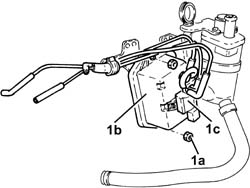

1060G70 VACUM TANK FOR CONTROLLING ENGINE AIR INTAKE R R
- Path
- Procedures > 10 ENGINE UNIT > 1060 DIESEL INJECTION SYSTEM > 1060G PRESSURE PUMP ELECTRIC CONTROL > 1060G70 VACUM TANK FOR CONTROLLING ENGINE AIR INTAKE R R
- Kind
- repair procedure (removal / refitting; the operation number is the code)
- Applies to
- engines: 1.9 JTD 16V; all production periods
- Interactive page
- https://sloeber94.github.io/elrnDB-aGt/en/#/125001060
Applies to: engines: 1.9 JTD 16V; all production periods
 Removing
Removing
 Refitting
RefittingPosition the vehicle on the ramp
Ensure that the ignition key is in the OFF position, then disconnect the negative battery terminal (-).
Name | Connector | |
|---|---|---|
- | Battery | See A1B BATTERY ( BATTERY NEGATIVE ) |
Proceed with removal
- 1016A10 sound-proofing cover - r + r
Proceed with removal
Proceed with removal
Op. 7055B54 UNDER-ENGINE GUARD - R R
Proceed with removal
1. At the bench, undo the nuts (1a) and remove the vacuum reservoir (1b) complete with solenoid valve (1c) and pipes from the mounting bracket.
Op. 1044B10 FUEL FILTER ASSEMBLY - R + R OR REPLACE
Op. 1080D34 ENGINE OIL VAPOUR SEPARATOR - R + R

Applies to: engines: 1.9 JTD 16V; all production periods
Refitting
RemovingPlace the vacuum reservoir mounting bracket complete with solenoid valve and pipes back in its housing and secure it using the nuts.
Proceed with refitting
Op. 1080D34 ENGINE OIL VAPOUR SEPARATOR - R + R.
Proceed with refitting
Op. 1044B10 FUEL FILTER ASSEMBLY - R + R OR REPLACE.
Proceed with refitting
Op. 7055B54 UNDER-ENGINE GUARD - R R.
Proceed with refitting
- 1016A10 sound-proofing cover - r + r
.
Connect the negative (-) battery terminal
Remove the car from the ramps.